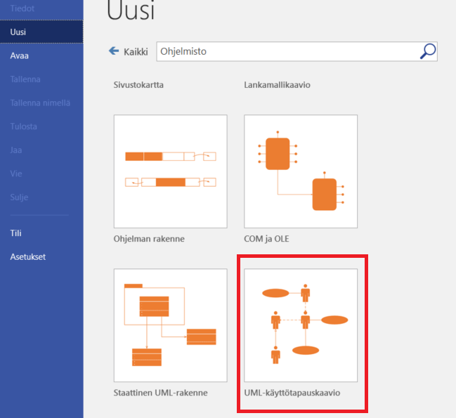
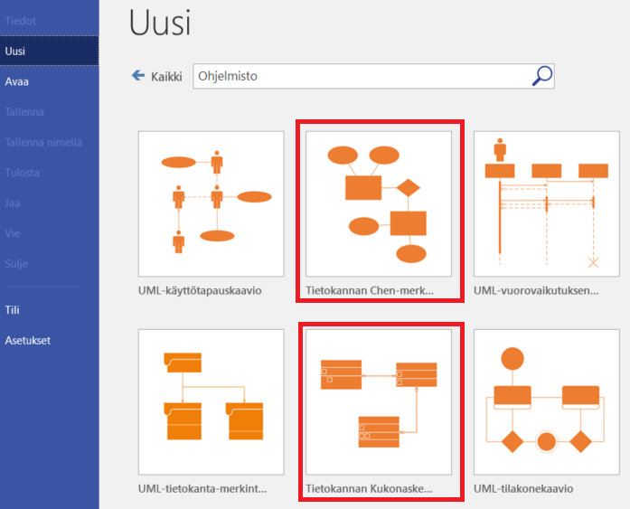

Suunnitelma
Käyttötapaukset
Käyttötapaukset (Use case), valitse Visiossa Ohjelmisto / UML-käyttötapauskaavio:

Esimerkki käyttötapauskaaviosta:
{kind=link}
Pyri tekemään mahdollisimman selkeitä toimintoja, älä ryhmittele kovin monia saman otsikon alle (parempi "Uutisen lisäys", "Uutisen poisto" kuin "Käyttäjä hallinnoi uutisia" tai "Uutisten lisäily, poistelu, muokkaaminen, selailu ja haku")
Tietokanta
- Kuvaa mitä tietoa tallennetaan sovelluksen suorittamisen aikana
- Älä sekoita toimintoihin (rekisteröityminen, kirjautuminen jne)!
- ER-kaavio ja tietokantakaavio kuvaavat samaa asiaa, käsite = taulu
ER-kaavio
- Neliöt = käsitteet, yksi taulu jonka tietoja tallennetaan
- Ympyrät = attribuutit, taulun ominaisuus (= kenttä), id-kenttää ei tarvitse merkitä
- Relaatiot käsitteiden välillä, lukumääräsuhde melkein aina 1:N

Esimerkki ER_kaaviosta, kolme eri variaatiota tilauksesta ja tuotteesta. 1. yksi tilaus voi sisältää vain yhden tuotteen (vierasavain taulussa Tilaus). 2. tilauksella voi olla monta tuotetta aputaulun avulla (assosiatiivinen käsite), 3. aputaulukko kuvattuna 1:n yhteyksin.
{kind=link}
Tietokantakaavio
- Samat käsitteet kuin ER-kaaviossa nyt tauluja
- Hiiren oikea / Näytä määritetyypit niin saat näkyviin kenttien tietotyypit (int, varchar, date, text)
{kind=link}
Käyttöliittymä
Käyttöliittymästä laaditaan "pikasuunnitelma" joka kuvaa yleisesti miltä sovelluksen tulisi näyttää. Tarkoitus ei ole kuvata kaikkia sovelluksen sivuja / toimintoja vaan tarjota yleiskuva suunniteltavasta sovelluksesta.
Voit tehdAdobe XD:n